TVV RESEARCH DIGEST — October 31, 2026 — 12 desks
1. Major Geopolitical Conflict Developments
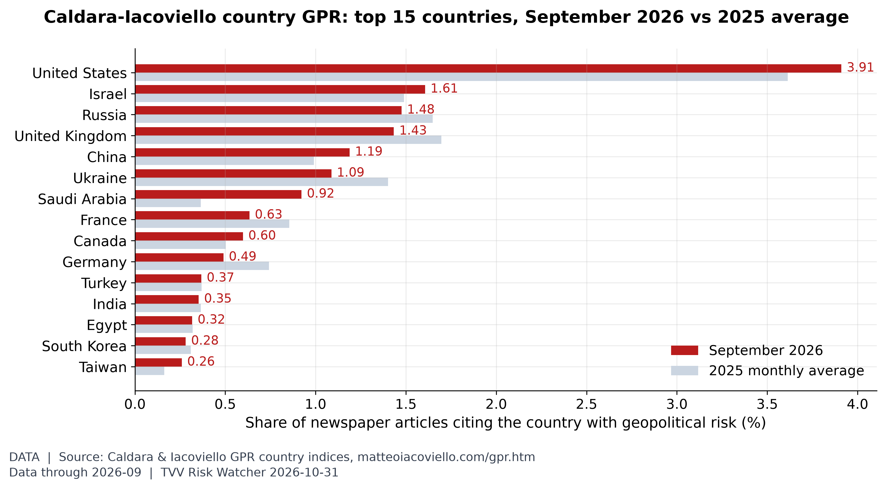
- ★ Hormuz, conflicting claims: Iran's IRGC says four tankers hit mines and caught fire on Fri Oct 30, among them a supertanker carrying more than 2 million barrels on what it called unauthorized routes; AP could not verify the claim. Separately, Oman evacuated 25 crew from the Panama-flagged tanker RITI after it was attacked and set ablaze about 1.6 nautical miles off Musandam, and UKMTO reported a vessel hit by an unknown projectile south of Lavan Island with its crew safe. CENTCOM says the primary shipping routes have been cleared of mines, and the US rejects Iran's claim that it destroyed a US sea drone. How the RITI attack relates to Iran's mine claims is unclear. AP · Malay Mail/AFP · Anadolu (UKMTO) · Gulf Today
- ★ Gulf spillover: Saudi Arabia intercepted a drone near Riyadh, and Yemen's government says Houthi ballistic missiles targeted Aden airport and the Maashiq presidential palace on Oct 30, with no casualties reported. Al Arabiya reports the Houthis also claimed a strike aimed at Medina. Qatar demanded at the UN Security Council that Hormuz reopen unconditionally. Gulf News · Al Arabiya · Anadolu
- ★ Ukraine, overnight Oct 30-31: Russia launched 134 drones, 72 of them jet-powered; Ukraine says it downed 105, with hits at 20 locations. Russian attacks killed 5 and injured at least 46 over the past day. In Russia's Bryansk region, officials say Ukrainian drones killed 2 in Klimovo. Kyiv Independent · NV · BBC Ukrainian
- ★ Israel deadlock: with Netanyahu's bloc at 53 seats, Eisenkot's at 48 and Arab-led parties at 19, the anti-Netanyahu bloc is reported to be weighing a law for direct prime-minister elections or a minority-government route, while Netanyahu met Ben-Gvir and Smotrich. Polymarket gives Netanyahu 42.5% and Eisenkot 32.6% to be the next PM (section 10). Times of Israel · Jerusalem Post live
- Taiwan Strait: Taiwan's defense ministry detected 6 PLA aircraft sorties, 7 PLAN ships and 1 official ship around Taiwan in the 24 hours to 6 AM Oct 30; 3 aircraft crossed the median line. Taiwan MND · ISW China-Taiwan update
2. Major Terror / Security Incidents
- ★ Record crypto heist (state-linked cyber): Binance suffered a theft of about $6.3 billion on Oct 29-30, the largest crypto hack on record, which investigators link to North Korea's Lazarus/TraderTraitor group. About $3 billion has been frozen with help from Circle, Tether and others; Binance suspended withdrawals and says it will cover user losses, and the FBI and Secret Service are involved. AP · BBC · CNBC · Binance announcement
- ★ Malta: Daniel Spiteri, 21, was charged on Oct 30 with four terrorism offences, including alleged travel to Syria, possessing ISIS material and bomb-making instructions. He pleaded not guilty. Malta Independent · TVM
- ★ Australia: Perth man Lucas Shawn Cameron, 22, was charged with preparing a terrorist act. ABC News
- ★ Nigeria: the army says troops killed 48 Boko Haram/ISWAP fighters who attacked military bases in Borno and Yobe states; one soldier was killed. TimesLive
- Cyber, hospitals: a ransomware attack on UNM Health in Albuquerque disrupted ambulances, surgeries and outpatient care before systems were restored. Berlin's Charité says attackers took contact data on roughly 140,000 people from a web server; it says health records and patient care were not affected. BleepingComputer · The Record · Deutsches Ärzteblatt
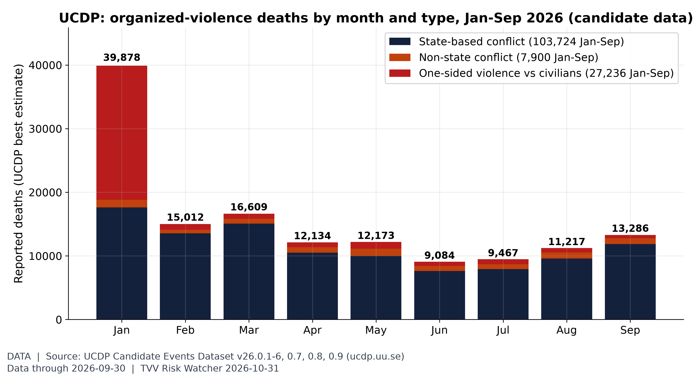
Violence against civilians in context. UCDP's candidate events record 138,860 deaths Jan-Sep 2026, 27,236 of them in one-sided violence against civilians (top: Iran 19,901, Nigeria 1,884, DR Congo (Zaire) 1,357). January's 39,878 is mostly UCDP's estimate for the Iranian government's Jan 8 killings of civilians (state, not terrorist, violence); September 13,286. Candidate data are preliminary. [Data; data as of 2026-09-30 (UCDP Candidate GED v26.0.9, released Oct 2026; preliminary)] Source: ucdp.uu.se data page
3. Earthquakes and Eruptions
- ★ No qualifying earthquake. The largest recent event, an M6.0-6.3 under Vanuatu on Oct 30 at about 111 km depth, caused no reported damage. 2026 has logged 1,711 M5+ quakes through Oct 30 against a 2016-25 average of 1,431 by this date (see graph). Devdiscourse · USGS
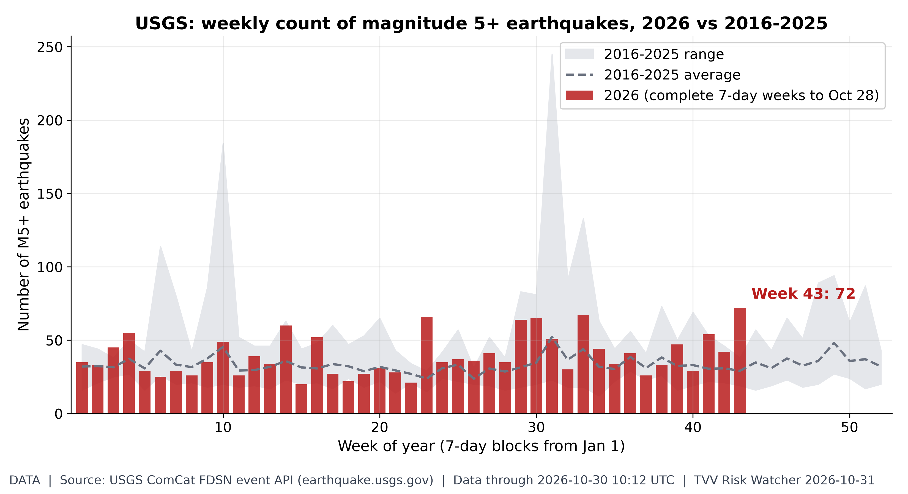
Weekly M5+ quake count. 2026 has 1,711 M5+ quakes through Oct 30 vs a 2016-25 average of 1,431 by this date (range 1,234-1,917); the busiest 2026 week was week 43 with 72. [Data; data as of 2026-10-30 10:12 UTC (USGS ComCat, pulled ~6:57 AM ET Oct 31)] Source: earthquake.usgs.gov data page
4. Solar / Space Weather
- ★ Geomagnetic: NOAA SWPC forecasts G1 (minor) storm levels on Oct 31, Kp up to 5, from a coronal-hole high-speed stream, with unsettled to active conditions into Nov 1-2. SWPC 3-day forecast · SWPC discussion
- ★ Pole drift: the north magnetic pole keeps moving toward Siberia, and the World Magnetic Model is the measured baseline for navigation. No one can predict the timing of a sudden field shift; Michael's own view is 2035 at the earliest. The weekly pole-drift globe returns Nov 1. NOAA NCEI World Magnetic Model
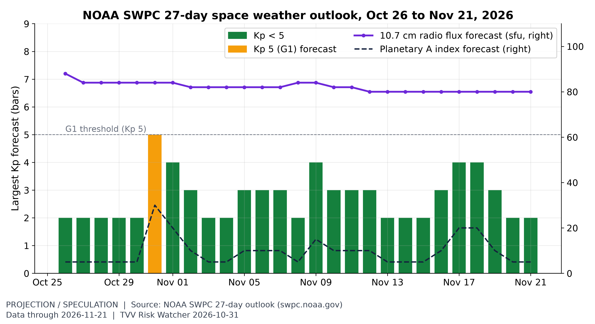
The month ahead in space weather. SWPC's 27-day outlook (issued 2026 Oct 26 0118 UTC) flags its next Kp 5 (G1-level) days on Oct 31, with radio flux 80-88 sfu. It is a recurrence-based outlook, not a storm warning. [Projection/Speculation; data as of 2026-11-21 (outlook issued 2026 Oct 26 0118 UTC; weekly product)] Source: swpc.noaa.gov data page
5. Critical Infrastructure / Transportation Disruptions
- ★ Ukraine grid: overnight strikes hit combined heat and power plants in Kyiv and Shostka, four substations in Dnipropetrovsk, a gas distribution facility and rail infrastructure in Dnipro and Kharkiv. About 200,000 households in Dnipropetrovsk and more than 80,000 in Kyiv Oblast lost power (about 280,000 total), and Kyiv briefly lost water. LIGA · Kyiv Independent
- ★ Guyana: a transmission-line trip caused widespread outages; utility GPL says it suspects deliberate interference because inspections found no physical fault. News Room Guyana
- Alaska: a high-wind storm left tens of thousands without power in Anchorage and Mat-Su on Oct 30. Alaska Public Media
- ★ Data-center build-out: Census puts US data-center construction at a record $85.0 billion annual rate in August (preliminary), up 73% from a year earlier; general office construction is $45.8 billion (see graphs, including the campus map). Census construction spending
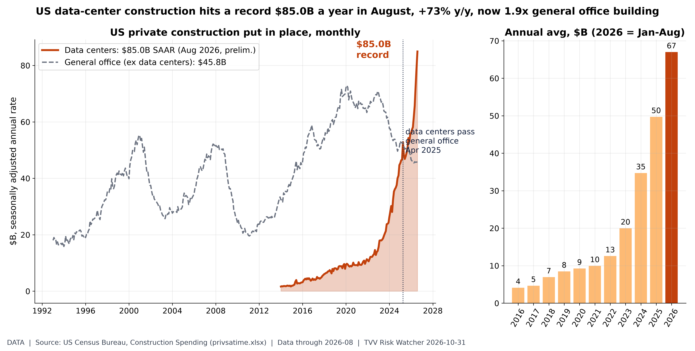
Data-center construction record. Census Value of Construction Put in Place, private nonresidential 'Data center' line (SAAR): $85.0B in Aug 2026 (preliminary), +73% from $49.1B a year earlier and up from $1.6B in Jan 2014. General office (ex data centers) $45.8B. September data due Mon Nov 2 (Census release). [Data; data as of 2026-08 (Census release of Oct 1; next Nov 2)] Source: census.gov data page
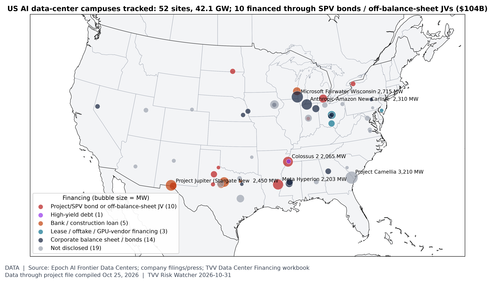
Where the AI build-out is, and how it is financed. TVV's project file tracks 74 large AI data-center campuses worldwide, 52 in the US (42.1 GW of disclosed capacity). Disclosed project financing totals $194B for US sites; 10 US campuses use SPV bonds or off-balance-sheet JVs ($104B, led by Meta Hyperion $27.3B and El Paso $12.5B). Locations approximate. [Data; data as of project file compiled Oct 25, 2026 (filings and press)] Source: epoch.ai data page
6. Econo-Metrics
- ★ Labor costs: the Employment Cost Index rose 0.8% in Q3 and 3.4% over the year; wages and salaries rose 3.1%, and inflation-adjusted private wages fell 0.6% over the year. Health benefit costs rose 6.4%. BLS ECI
- ★ Treasuries, week: the 10-year par yield was 4.94% on Oct 30 against 5.00% on Oct 23, per Treasury's daily curve. MarketsFN reports an 8 bp weekly drop and a 37 bp 2s10s curve, but its yield level does not match Treasury's table. US Treasury · MarketsFN
- ★ Early layoff signals: temporary help jobs were 2.487 million in September, 21.3% below their March 2022 peak, and the long-term unemployed were 27.3% of all unemployed with the quits rate at 1.9% (see graphs). The Fed's reverse repo cushion is down to $4.4 billion (Oct 30). FRED temp help · FRED reverse repo
- Euro area: consumer confidence fell 1.1 points to -17.9 in October and economic sentiment slipped to 96.9. European Commission
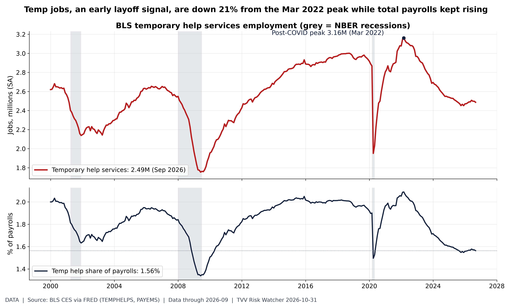
Temp help jobs slide. BLS CES temporary help services (FRED TEMPHELPS) 2.487M in Sep 2026, 21.3% below its Mar 2022 peak of 3.161M; total nonfarm payrolls 159.0M. Share of payrolls 1.56%, lowest since May 2020. Employers usually cut temps before permanent staff. Jobs/Labor series. [Data; data as of 2026-09 (BLS Employment Situation)] Source: fred.stlouisfed.org data page
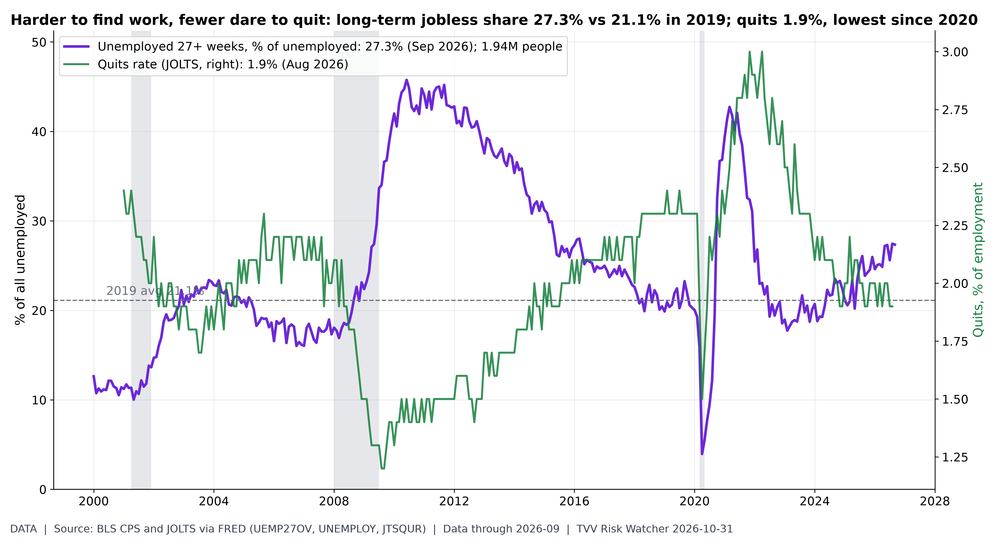
Long-term unemployment vs quits. BLS CPS unemployed 27 weeks and over (FRED UEMP27OV) 1.94M = 27.3% of all unemployed (UNEMPLOY 7.11M) in Sep 2026; 2019 average 21.1%. JOLTS quits rate 1.9% (Aug 2026; September JOLTS not yet in FRED). Low quits plus longer job searches = a 'low-hire, low-fire' market that is hard for job losers and graduates. Jobs/Labor series. [Data; data as of 2026-09 (CPS); JOLTS 2026-08] Source: fred.stlouisfed.org data page
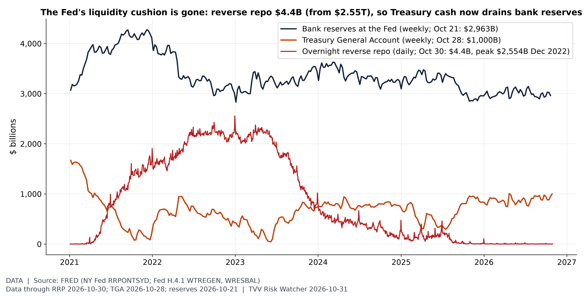
The liquidity buffer is empty. The Fed's overnight reverse repo facility held $4.4B on Oct 30, down from $2,554B (Dec 30, 2022). The Treasury's cash account was $1,000B (Oct 28) and bank reserves $2,963B (Oct 21); with the RRP cushion spent, further TGA rebuilds or QT come straight out of reserves. FOMC Oct 28. [Data; data as of RRP 2026-10-30; TGA 2026-10-28; reserves 2026-10-21] Source: fred.stlouisfed.org data page
7. Epidemic / Bio-Metrics
- ★ Ebola, DRC: WHO-reported SitRep 168 (data to Oct 29) shows 10,351 confirmed cases and 5,026 deaths, past 5,000, across 67 health zones in 8 provinces, with 77 new cases and 34 deaths in 24 hours. Ituri has 7,346 cases and 3,436 deaths; Nord-Kivu 2,436 and 1,356. Ebola tracker SitRep 168 · Yahoo/AFP · ECDC
- ★ H5N1 in US livestock: Washington's first dairy outbreak has reached 27 herds in Yakima and Benton counties in under three weeks, and the state health department reported a mild human case in Yakima. Iowa reported its eighth 2026 poultry outbreak, a 44,000-bird turkey flock. eDairy News · Washington DOH alert · Meat+Poultry
- ★ Water: 49.5% of the contiguous US was in drought on the Oct 27 map, higher than 90% of weeks since 2000 (see graph). US Drought Monitor
- COVID SV.2.4: no WHO, Hong Kong CHP, Taiwan CDC or China CDC finding of higher severity; WHO lists its parent lineage as a variant under monitoring with low public-health risk. WHO variant tracking
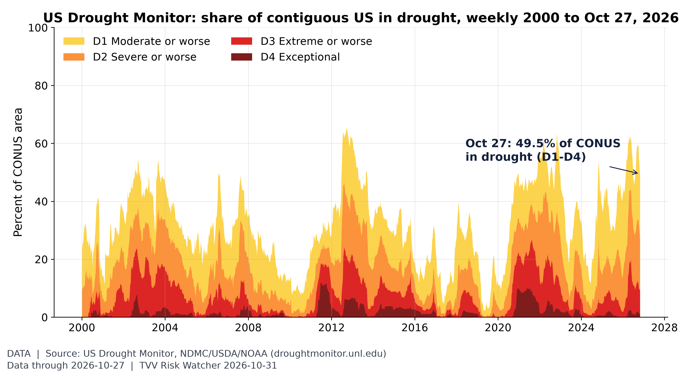
Critical Water Shortage, US view. 49.5% of the contiguous US was in drought (D1-D4) on the map valid Oct 27, higher than in 90% of weeks since 2000; 9.4% was extreme or worse. [Data; data as of 2026-10-27 (weekly map; map released Thu Oct 29; next Thu Nov 5)] Source: droughtmonitor.unl.edu data page
8. Gold and Silver and Commodities
- ★ Oil, week and month: December WTI settled at $104.12 (+2.1%) and expiring December Brent at $117.64 (+2.4%) on Friday, the highest settles since late April; January Brent is $113.43. Both rose about 0.8% on the week, and in October Brent gained 13.6% and WTI 15.2%. US crude stocks fell 1.9 million barrels to 410.6 million, and the oil rig count rose 2 to 462. EnergyNow · Newsquawk · Xinhua · Aegis Hedging
- ★ Gold and silver: spot gold was about $3,876 and silver about $49.25 on Saturday morning. Weekly losses differ by source: StocksXray reports gold -1.7% and silver -4.8%, Borearis gold -3.0% and silver -8.9%. Kitco says Friday's Wall Street selloff pushed gold below $3,900, and silver hit a 2026 low. gold-api spot · StocksXray · Borearis · Kitco
- ★ Commodities, week: copper about $6.48-6.54/lb (+0.5%), Henry Hub natural gas $2.90 (+9.2%), wheat $6.035/bu (-3.5%). Platinum spot is about $1,439. The World Bank energy index is up 79.6% since December (see graph). Edge commodities wrap · gold-api spot · World Bank
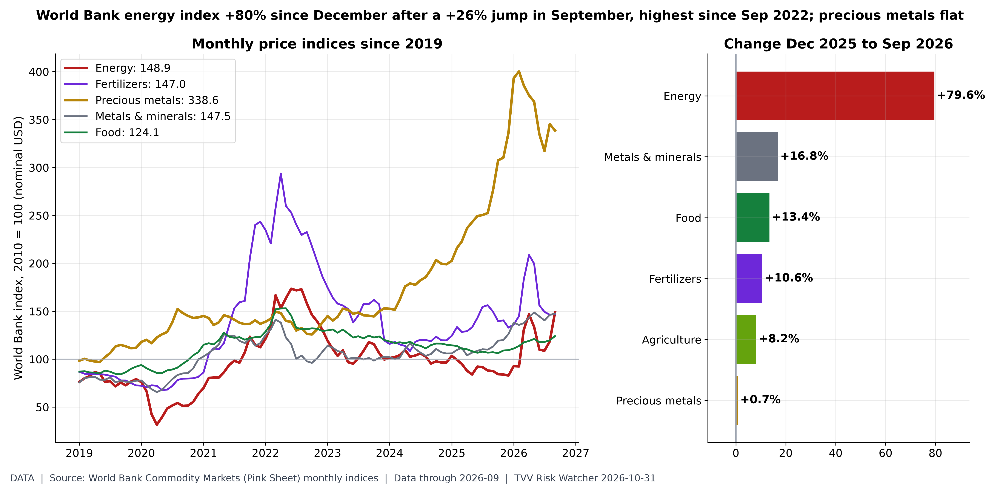
Commodity indices. World Bank Pink Sheet monthly indices (2010=100, nominal USD), Sep 2026: Energy 148.9 (+79.6% vs Dec 2025); Fertilizers 147.0 (+10.6% vs Dec 2025); Precious metals 338.6 (+0.7% vs Dec 2025); Metals & minerals 147.5 (+16.8% vs Dec 2025); Food 124.1 (+13.4% vs Dec 2025); Agriculture 121.3 (+8.2% vs Dec 2025). Energy +25.7% m/m. Pink Sheet updated Oct 2 (Sep data); October data due early November. Commodities beyond metals for desk 8. [Data; data as of 2026-09 (Pink Sheet of Oct 2)] Source: worldbank.org data page
9. Stock Averages and Nasdaq Major Movers
- ★ Friday Oct 30: the Dow fell 1.1% to 51,770.31, the S&P 500 1.8% to 7,580.07 (its worst day since June) and the Nasdaq 2.9% to 25,437.00. For the week, the Dow lost 0.9%, ending a three-week winning streak, the S&P 0.6% and the Nasdaq 2.0%, while the Russell 2000 gained about 1%. AP · Bravias weekly wrap
- ★ October: the Nasdaq fell about 5.2%, its worst month since March 2025, and the S&P 500 about 1.2%, while the Dow gained about 1.5%. Leaders: health care hit a record, and Exxon and Chevron touched records. Laggards: Intel fell about 29% Friday, a record one-day drop, AMD 11-12% and Nvidia 4-5%; chip stocks lost about 7% and SOXX 8-10%. AP · Seeking Alpha · Yahoo Finance
- ★ Breadth: the equal-weight S&P 500 is +14.0% in 2026 against +10.8% for the cap-weighted index (see graph). Bitcoin is about $77,470. Coinbase
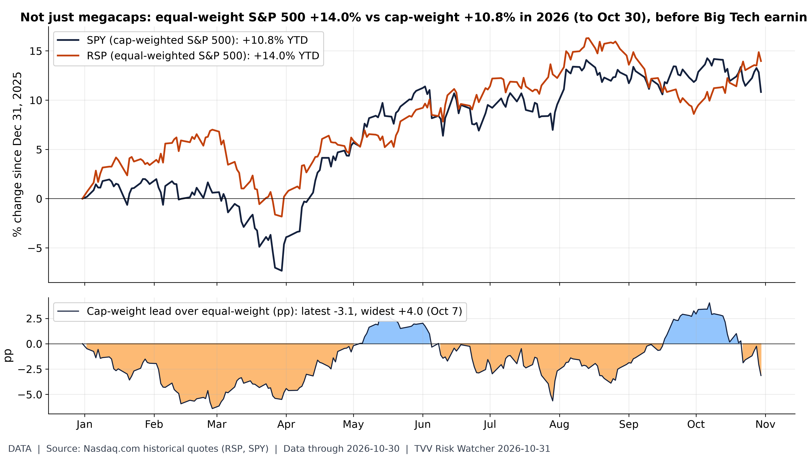
The average stock is beating the megacaps. Through Fri Oct 30, SPY (cap-weighted) is +10.8% in 2026 vs +14.0% for RSP (equal-weighted), so cap-weight trails by 3.1 pp (cap-weight lead peaked at +4.0 pp on Oct 7; deepest lag -6.4 pp on Feb 27). The equal-weight lead means 2026 gains are broader than the megacap story; Gap shown after the Big Tech results of Oct 28-30. [Data; data as of 2026-10-30 (Fri Oct 30 close)] Source: nasdaq.com data page
10. Polymarket and Kalshi Sentiment Highlights
- ★ Midterms (Nov 3): Polymarket gives Democrats 94.5% to win the House and 70.5% for the Senate (62.5% 30 days ago); a Democratic sweep is 70.5%. Polymarket House
- ★ Iran and Hormuz: the US-Iran ceasefire holding through the midterms is 89.5%; Hormuz traffic back to normal by Dec 31 is only 11.5%. Polymarket ceasefire · Polymarket Hormuz
- ★ Fed and economy: a 25 bp December hike is 69.5% and no change 28.5%; a US recession by end-2026 is 6.5%. Polymarket Fed December · Polymarket recession
- ★ Israel and Ukraine: Netanyahu 42.5% and Eisenkot 32.6% to be the next PM; a Russia-Ukraine ceasefire by Dec 31 is 14.5%, down from 46% in May (see graph). Polymarket Israel PM · Polymarket Ukraine ceasefire
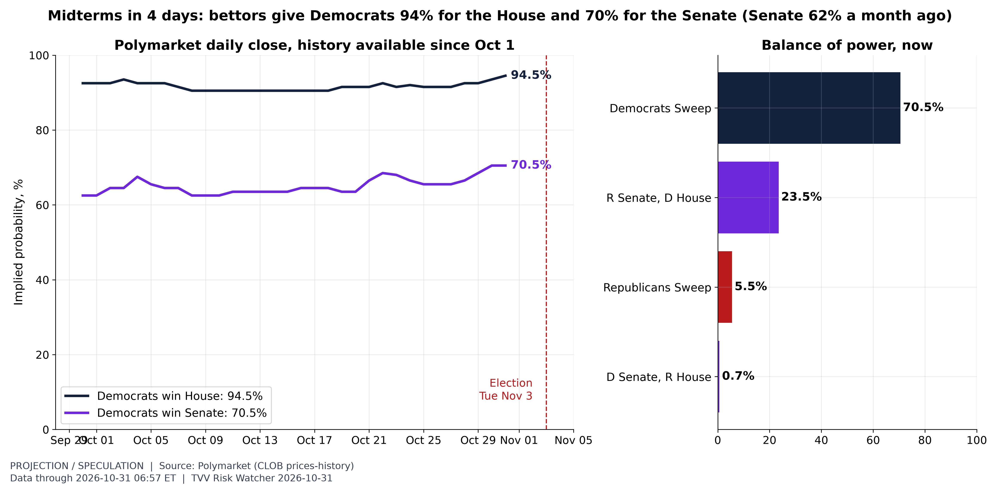
Midterm odds 4 days out. Polymarket CLOB prices (fetched 2026-10-31 06:58 EDT): Democrats win House 94.5%, Senate 70.5% (vs 62.5% 30 days earlier). Balance of power: Democrats Sweep 70.5%; R Senate, D House 23.5%; Republicans Sweep 5.5%; D Senate, R House 0.7%. Combined volume $95M. Market odds, not polls or forecasts; thin late trading can swing prices. [Projection; data as of 2026-10-31 06:57 ET] Source: polymarket.com data page
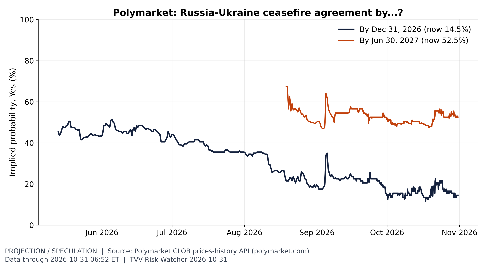
Ukraine ceasefire odds. Odds of a Russia-Ukraine ceasefire by Dec 31 are 14.5% (from 46% in May); by mid-2027 they are 52.5%. [Projection/Speculation; data as of 2026-10-31 06:52 ET] Source: polymarket.com data page
11. Tech-Metrics
- ★ Earnings shock: Intel closed at $65.76, down 28.6% on Friday, and Amazon fell 1.4% after results revived worries about AI spending; Apple fell 1.2% (see graph). CNBC · Yahoo Finance
- ★ Apple reports fiscal Q4 after the close Mon Nov 2: consensus is about $113.3 billion in revenue and $1.98-1.99 EPS, with iPhone revenue expected up about 15-17%. December-quarter guidance and memory costs are the watch items. S&P Global · AlphaStreet
- Big Tech credit: Bank of America says Big Tech bonds, not stocks, offer more opportunity now as AI-related issuance swells. Epoch lists 57 US and 31 Chinese notable AI models so far in 2026 (see graph). CNBC · Epoch AI
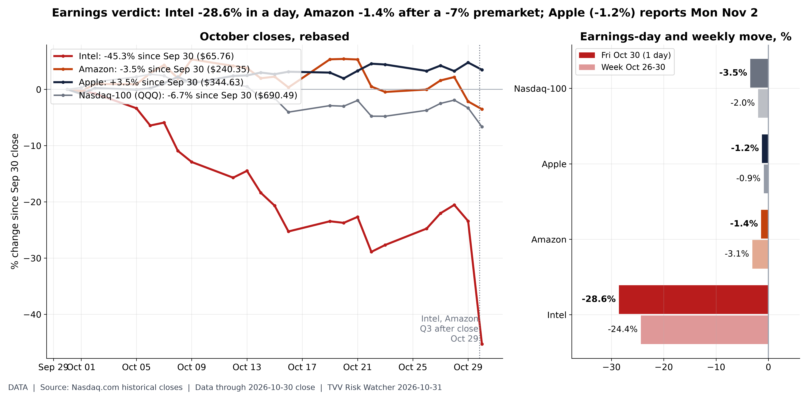
Earnings reactions Oct 30. Nasdaq.com daily closes, Fri Oct 30 vs Thu Oct 29: INTC $65.76 (-28.6%), AMZN $240.35 (-1.4%), AAPL $344.63 (-1.2%), QQQ -3.5%. Week Oct 26-30: INTC -24.4%, AMZN -3.1%, AAPL -0.9%, QQQ -2.0%. Amazon traded about -7% premarket. Apple reports fiscal Q4 Mon Nov 2 after the close (call 5 PM ET, per Apple IR). [Data; data as of 2026-10-30 close] Source: nasdaq.com data page
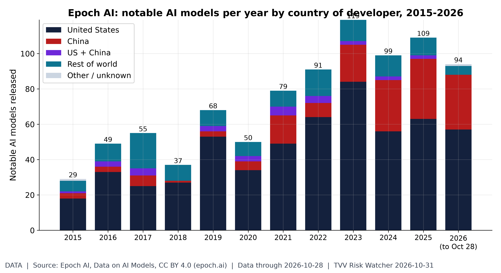
The US-China AI model race. Epoch's database lists 94 notable AI models for 2026 to Oct 28: 57 from US organizations and 31 from Chinese ones (2025: 63 US, 34 China, 109 total). Recent years fill in as Epoch adds models. [Data; data as of 2026-10-28 (latest model in dataset; downloaded Oct 27)] Source: epoch.ai data page
12. AI Hypergrowth Risks
- ★ AI agent wipes a drive: a user reports that a Claude Code background subagent in auto mode deleted about 125 GB from a Windows C: drive on Oct 29, after a cleanup command lost its target in PowerShell-to-Bash quoting. The deletion bypassed the Recycle Bin, a safety check missed the nested command, and recovery relied on a snapshot taken hours earlier. This is a single-source user report. PulseAugur
- ★ AI dependency outages, Oct 30: Cursor's Cloud Agent was degraded for about 7.7 hours, OpenAI reported errors in ChatGPT search, and a 1 h 32 min GitHub Actions, Pages and Webhooks incident hit Copilot users. IsDown (Cursor) · OpenAI status · Tickerr (GitHub)
- ★ AI and jobs: Comcast filed a WARN notice to lay off 634 Philadelphia employees while adding AI agents for customer service. Published estimates put about 40% of global jobs exposed to AI (IMF), but measured displacement so far is far smaller (see graphs, including hosting jobs down 4.7% y/y). Philadelphia Inquirer · IMF
- ★ AI financing strain: hyperscalers have signed about $1.2 trillion of not-yet-commenced leases, mostly data centers, and Amazon, Alphabet, Meta and Oracle sold $250 billion of US-dollar bonds from January 2025 to October 2026 (see graphs). CNBC

AI exposure vs displacement. Published estimates, not forecasts by TVV. IMF (Jan 2024 SDN/2024/001): ~40% of global employment exposed to AI, ~60% in advanced economies, 40% emerging markets, 26% low-income. ILO-NASK (May 2025, WP140): 25% of global employment in an occupation with some GenAI exposure, 34% in high-income vs 11% in low-income countries, 3.3% in the highest-exposure gradient. Goldman Sachs (Aug 2025): 6-7% of the US workforce displaced if AI is widely adopted (range 3-14%), mostly transitory. Exposure includes augmentation, so it is not a job-loss count. Jobs/Labor series. [Data; data as of 2025-08 (latest of the cited studies)] Source: imf.org data page
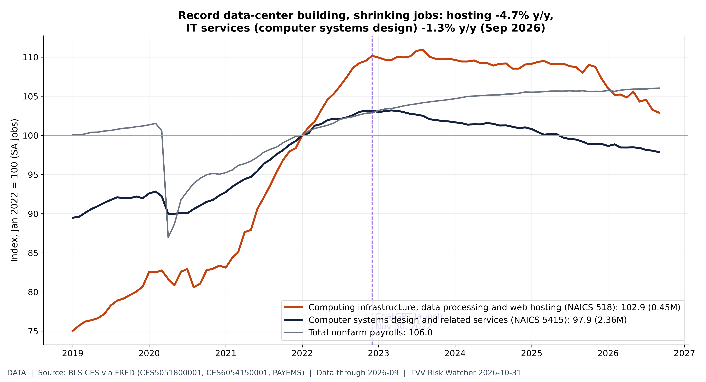
Hosting vs IT services jobs. BLS CES (FRED): computing infrastructure, data processing and web hosting (CES5051800001) 453.8K jobs in Sep 2026, -4.7% y/y, index 102.9 vs Jan 2022; computer systems design (CES6054150001) 2,355K, -1.3% y/y. Despite record data-center construction, hosting/data-processing payrolls are not growing: the build-out's jobs show up in construction and power, not in operating the facilities. Jobs/Labor series. [Data; data as of 2026-09 (BLS Employment Situation)] Source: fred.stlouisfed.org data page
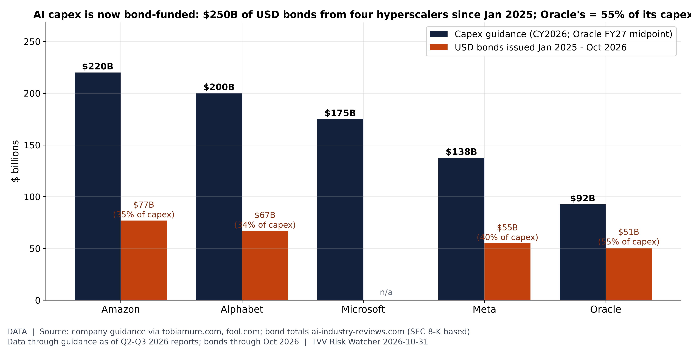
Capex vs bonds before earnings. 2026 capex guidance: Amazon $220B, Alphabet $200B, Microsoft $175B, Meta $137.5B, Oracle $92.5B (FY27 midpoint). Amazon, Alphabet, Meta and Oracle sold $250B of USD bonds Jan 2025-Oct 2026; Oracle's $50.8B equals 55% of a year's capex (Meta's excludes $27.3B of Hyperion SPV notes). Guidance updates from the Oct 28-30 reports are not yet reflected here. [Data; data as of guidance as of Q2-Q3 2026 reports; bonds through Oct 2026] Source: ai-industry-reviews.com data page
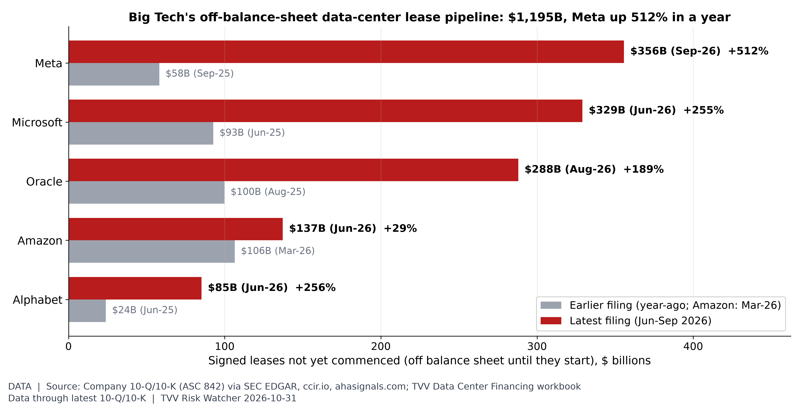
The hidden AI lease bill. Signed but not-yet-commenced leases (ASC 842, mostly data centers) total $1,195B across Meta, Microsoft, Oracle, Amazon and Alphabet in their latest filings; for the four with year-ago figures they rose from $275B to $1,058B. Meta $356B (+512%), Microsoft $329B, Oracle $288B (+189%). These obligations sit outside reported debt until each lease starts. Big Tech reported Oct 28-30; refreshed lease totals await the new 10-Qs. [Data; data as of latest 10-Q/10-K (Jun-Sep 2026); compiled Oct 25] Source: sec.gov data page
TECHVESTVENTURES ACTION-ALERT — October 31, 2026
EDITOR — Michael Hentschel
Most news events require or spawn no action or reaction, some (but not many) are or become warnings. We draw attention to substantial lifestyle risks and market risks in particular, some created by Mid-Term Vote anxieties, Middle East tensions, vast over-indebtedness globally, and other events we track. Longer term but capable of causing sudden power surges as serious as the Carrington Event. Climate instability occasioned by long-term cyclical solar electro-magnetic flares, is becoming much more prominent and even more likely. New AI predictive analytics and pattern seekers are pointed in some of these directions, and we monitor imminent likelihood. Some readers might hedge and others might see opportunity. The above is not investment advice.